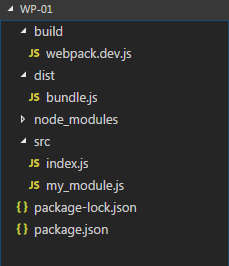
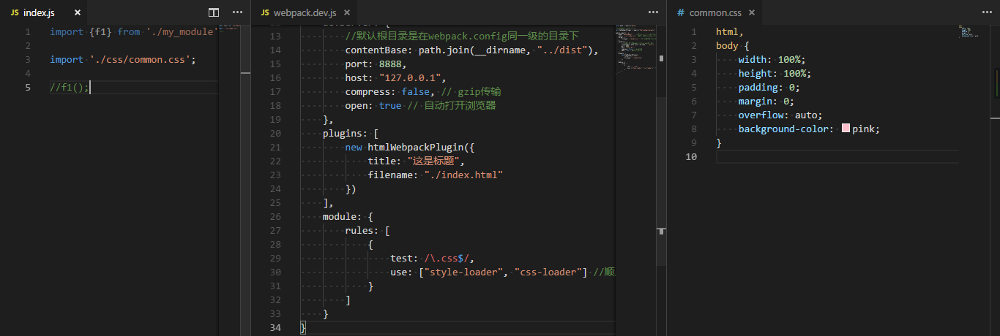
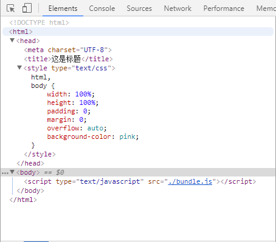
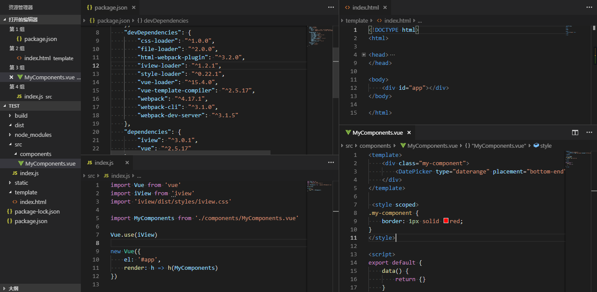
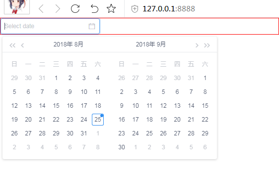
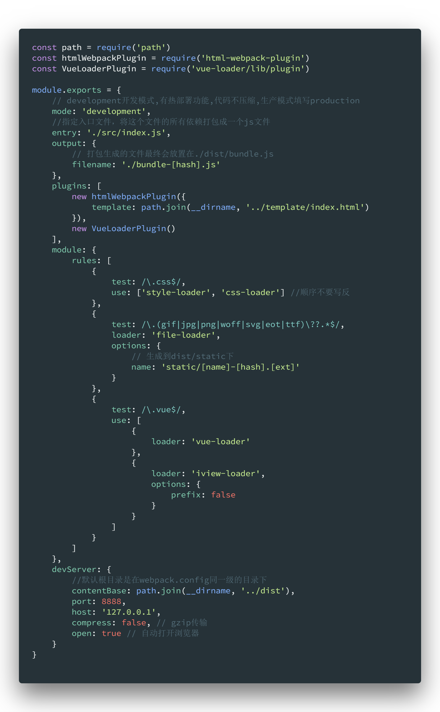

webpack 是现在流行的前端打包工具，用于模块化开发，从一个入口文件开始，将所有依赖打包成一个 JS 文件
最近抽空学习了下，虽然很不习惯现在的前端搞得比后端都要复杂，但是对于大项目来说，想要便于维护是肯定要模块化开发的，webpack 就是最佳的选择
最简单的例子
准备一个空的 package.json
{
"name": "wp-demo",
"version": "1.0.0",
"scripts": {
"build": "webpack --config ./build/webpack.dev.js"
}
}
安装 webpack，建议局部作为开发依赖安装
npm install webpack -D
npm install webpack-cli -D
当我们执行npm run build的时候机会执行webpack --config ./build/webpack.dev.js,所以还要建立一个webpack.dev.js文件用于配置 webpack
module.exports = {
// development开发模式,有热部署功能,代码不压缩,生产模式填写production
mode: 'development',
//指定入口文件，将这个文件的所有依赖打包成一个js文件
entry: './src/index.js',
output: {
// 打包生成的文件最终会放置在./dist/bundle.js
filename: './bundle.js'
}
}
下面就可以以模块化的思想来写代码了，从入口文件开始，先假设入口文件依赖某个模块my_module.js
/*********index.js*************/
// 导入模块
import {f1} from './my_module'
// 使用模块
f1();
/*******my_module.js*************/
function f1(){
alert(1);
}
export {
f1
}
最终目录如下

执行npm run build之后，会在 dist 目录下生成 bundle.js
想要查看效果，需要手动新建一个 html 文件，引入 dist 目录下生成的打包后的 js 文件即可
启动服务
webpack 提供了一个本地服务器，便于开发，同时支持热部署，简单地配置下就能够使用了
npm install webpack-dev-server -D
同时package.json文件添加启动脚本``
"scripts": {
"build": "webpack --config ./build/webpack.dev.js",
"start": "webpack-dev-server --config ./build/webpack.dev.js"
}
在webpack.dev.js添加 devServer 的配置
// 引入path模块
const path = require("path")
// 在module.exports添加下面的节点
devServer: {
//默认根目录是在webpack.config同一级的目录下
contentBase: path.join(__dirname, '../dist'),
port: 8888,
host: '127.0.0.1',
compress: false, // gzip传输
open: true // 自动打开浏览器
}
然后npm run start即可启动项目，注意要在 dist 目录下添加一个 index.html 文件并引入生成的 bundle，然后再127.0.0.1:8888访问项目
插件
webpack 这么火的一个原因正是由于它有丰富的插件可以使用
html-webpack-plugin
上面我们的项目可以跑起来了，但是有没有感觉手动建立 index.html 文件，然后引入生成的打包文件很麻烦？
而且有时候为了避免生产缓存，一般这么配置filename: './bundle-[hash].js'，显然手动建立 index.html 引入打包文件是不现实的了
html-webpack-plugin 就是用来解决这个问题的，他可以自己建立或者根据模板建立 html 文件，同时引入打包生成的 js 文件
npm install html-webpack-plugin -D
在webpack.dev.js添加 plugins 的配置
const htmlWebpackPlugin = require('html-webpack-plugin')
// 在module.exports添加下面的节点
plugins: [
new htmlWebpackPlugin({
title: "这是标题",
filename: "./index.html"
})
]
Loader
在 webpack 中，一切都是模块，比如可以在 js 中引入 css 文件，图片文件
css-loader
想要引入 css 文件，需要安装下面的模块
npm install style-loader -D
npm install css-loader -D
在webpack.dev.js添加 module 的配置
// 在module.exports添加下面的节点
module: {
rules: [
{
test: /\.css$/,
use: ['style-loader', 'css-loader'] //顺序不要写反
}
]
}

npm start 启动起来,最终会使用 js 在 dom 中插入 style 节点

file-loader
上面说过了，在 webpack 中，一切都是模块，对于那些不需要特殊处理的文件，直接使用 file-loader 就行了
对于一些静态文件，比如说图片和字体文件，这些是无法打包进 js 文件中的，严格的说图片文件是可以的，一般有些项目会对小图片会进行 base64 编码成字符串打进去，不过我然觉这类文件还是分开为好
npm install file-loader -D
在webpack.dev.js添加 module 的配置
// 在module.exports添加下面的节点
module: {
rules: [
{
test: /\.(gif|jpg|png|woff|svg|eot|ttf)\??.*$/,
loader: 'file-loader',
options: {
// 生成到dist/static下
name: 'static/[name]-[hash].[ext]'
}
}
]
}
注意：对于 vue 文件，是可以直接写 html 的，直接在 img 标签内引入 img 是不行的，必须要先导入，不然这个图片是不会被作为依赖，最终放到 dist 目录的，或者使用<img src={require('../static/img/logo.png')} />
import LogoImg from './../static/img/logo.png'
const Logo2Img = require('./../static/img/logo.png')
// 类似于 static/logo-b15c113aeddbeb606d938010b88cf8e6.png
console.log(LogoImg)
console.log(Logo2Img)
babel-loader
有时候写代码的时候用到了 es6 的一些语法，由于生产的客户端情况复杂，不能保证所有设备的浏览器都支持 es6 语法
babel-loader 的作用就是把你的部分代码降级，以此来兼容更多的设备，同时开发很能使用最新的语法糖
npm install babel-core -D
npm install babel-loader -D
npm install babel-preset-env -D
在webpack.dev.js添加 module 的配置
// 在module.exports添加下面的节点
module: {
rules: [
{
test: /\.js$/,
exclude: '/node_modules/',
loader: 'babel-loader'
}
]
}
在 package.json 配置 babel 规则,下面配置即实现对 ES2015+语法进行转码
"babel": {
"presets": [
"env"
]
}
多环境打包
一般在开发时候，开发和生产的打包的配置肯定是不同的
那么 webpack 配置文件存在多份是必然的，当然了也可以在命令中传入参数来判断是否是开发生产
但是我的习惯是生产开发各一个配置文件，但是对与公用的配置文件要写两次的话很啰嗦，而且修改下也要改两次
这里推荐webpack-merge当我写好了公用配置
那么在我的开发配置里面可以这么写，本地开发不进行 babel 转码，热部署比较快
const path = require('path')
const baseWebpackConfig = require('./webpack.basic.js')
const merge = require('webpack-merge')
const devConfig = merge(baseWebpackConfig, {
mode: 'development',
devServer: {
//默认根目录是在webpack.config同一级的目录下
contentBase: path.join(__dirname, '../dist'),
port: 8888,
host: '127.0.0.1',
compress: false, // gzip传输
open: true // 自动打开浏览器
}
})
module.exports = devConfig
生产这么写
const baseWebpackConfig = require('./webpack.basic.js')
const merge = require('webpack-merge')
const buildConfig = merge(baseWebpackConfig, {
mode: 'production',
module: {
rules: [
{
test: /\.js$/,
exclude: '/node_modules/',
loader: 'babel-loader'
}
]
}
})
module.exports = buildConfig
实战
使用 Vue 框架和 iView 框架
本文章上面的都要安装，同时还要安装下面的依赖，还要注意的是 Vue 挂在在<div id='app'>上，html-webpack-plugin 自动生成的 html 就不行了，需要新建一个模板文件
npm install vue -S // 代码依赖
npm install vue-loader -D // 开发依赖
npm install vue-template-compiler -D // 开发依赖
npm install iview -S // 代码依赖
npm install iview-loader -D // 开发依赖


